airglow · Soft
airglow as he saw it, taken further
The glow trailing a play button: a halo and three receding blurred echoes, in gradient light.

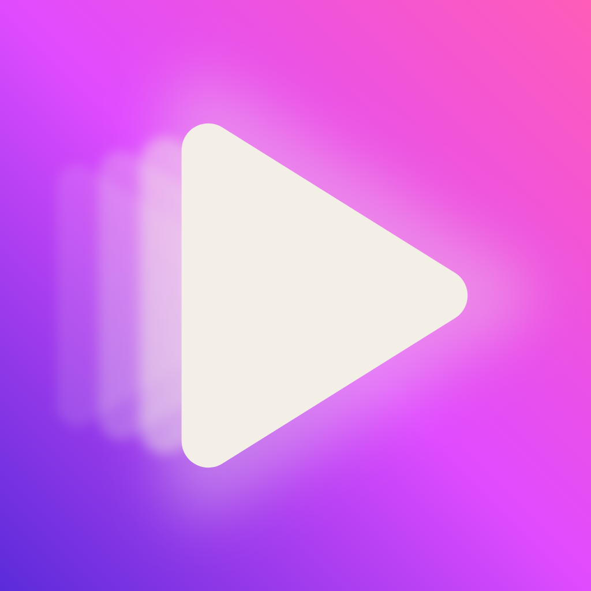
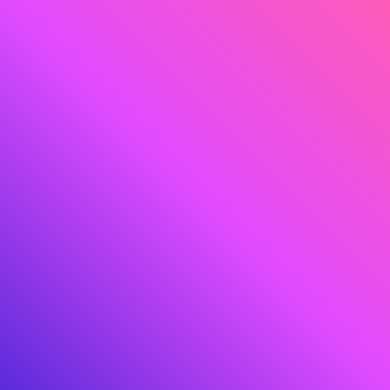
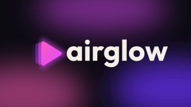
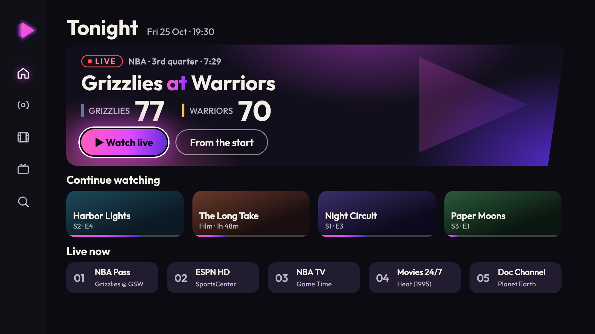
Home, 1080p. The rail carries the mark only.
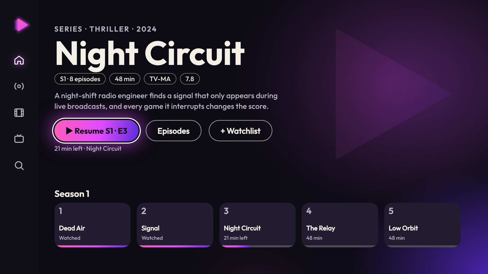
Series detail, 1080p.
Launch storyboard (stills; the lockup is never on a screen with the standalone mark)
Frame 1 · 0.4 s. The play button slides in and leaves three glow echoes, a halo blooming.
Frame 2 · 1.2 s. Echoes stretch into a gradient streak; the lockup rises through it.
Frame 3 · 1.9 s. The gradient dissolves off the left on an 8° slant; home is revealed.
Launcher row (icon among IMDb / Plex / Netflix / Prime / Hulu / Twitch / Paramount+ colours)
IMDb
Plex
Netflix
Prime
Hulu
Twitch
Para+
Icon-size and across-the-room check
icon 96 / 48 / 24 · mark 56 / 32 (small) / 20 · lockup 46 / 26 px tall · last pair blurred = across the room
- + Closest to what he saw and loved: glow, gradient, friendliest, and the echo now reads as glow, not fast-forward (see the tests). The best launch animation.
- − Blur filters in the SVG (Android VectorDrawable can't do them: ship the PNG adaptive layers); least edgy, slant is minimal; glow can mush at 24 px, so the small mark drops to halo + one echo.
- ↔ Icon: gradient tile reads at 48 and 24 px; across the room (blurred) it is a soft pink glow with a clear triangle.
airglow · Sharp
airglow with FLARE's slant and edge
The same glow idea cut with a blade: a skewed play wedge and three crisp echo bars, wiped in at 14°.
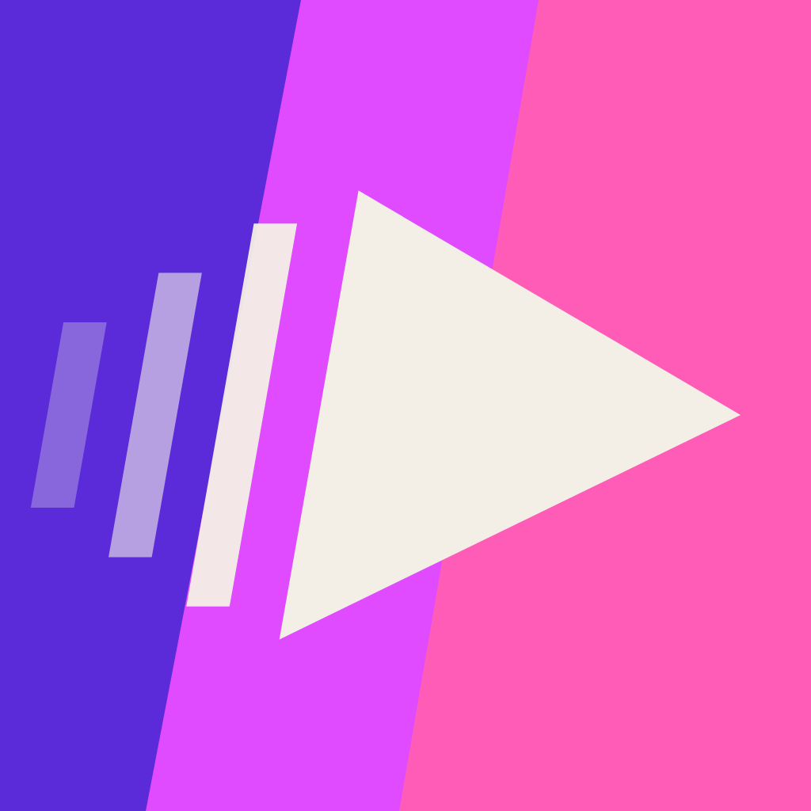
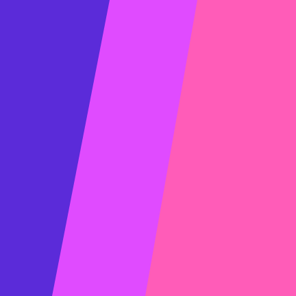
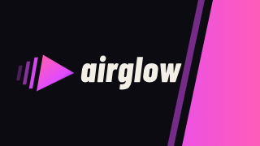
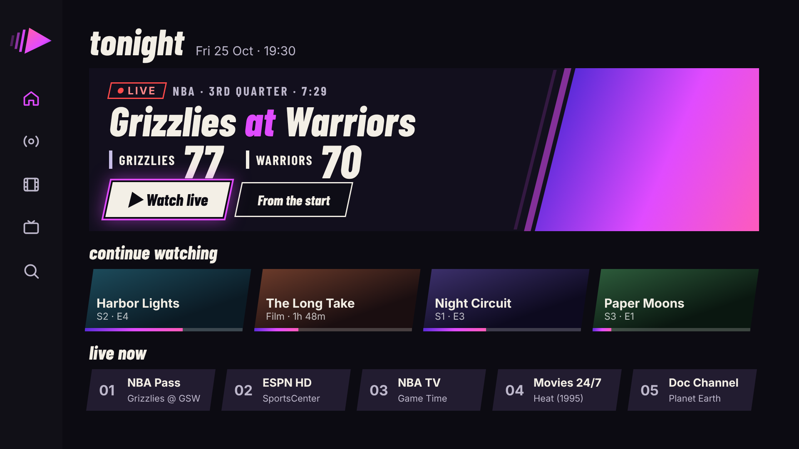
Home, 1080p. The rail carries the mark only.
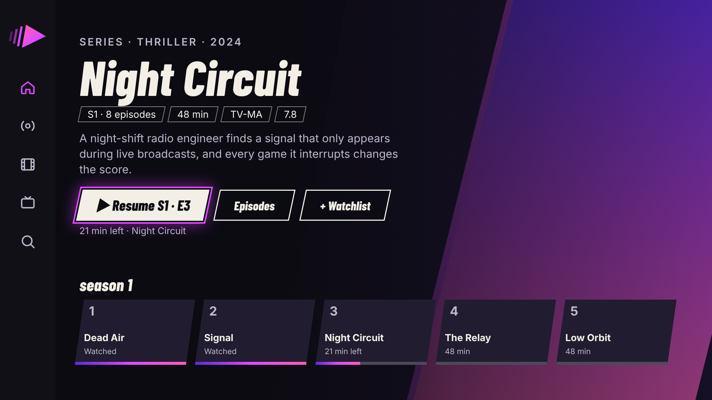
Series detail, 1080p.
Launch storyboard (stills; the lockup is never on a screen with the standalone mark)
Frame 1 · 0.15 s. Hard cut; a slab wipes in at 14° and the wedge slams in with three echo bars.
Frame 2 · 0.7 s. The lockup lands (two-frame shake); the slab pulls right.
Frame 3 · 1.4 s. The slab sweeps off right on the same 14°, revealing home.
Launcher row (icon among IMDb / Plex / Netflix / Prime / Hulu / Twitch / Paramount+ colours)
IMDb
Plex
Netflix
Prime
Hulu
Twitch
Para+
Icon-size and across-the-room check
icon 96 / 48 / 24 · mark 56 / 32 (small) / 20 · lockup 46 / 26 px tall · last pair blurred = across the room
- + Much more energy and the slant he loved from TIPOFF, without the lime; the bars are not triangles, so there is no skip-button read; wipes are a real brand device.
- − More sporty; lowercase italic condensed is a compromise (uppercase read as FLARE/TIPOFF); skewed UI text needs care for legibility; the diagonal tile is busy next to calm tiles.
- ↔ Icon: the diagonal three-tone tile is the loudest in the launcher row; the wedge survives 24 px, the bars fuse into a stripe.